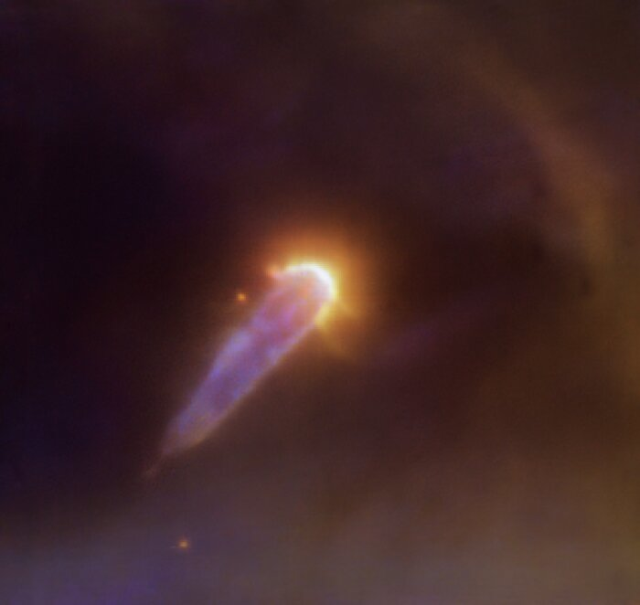
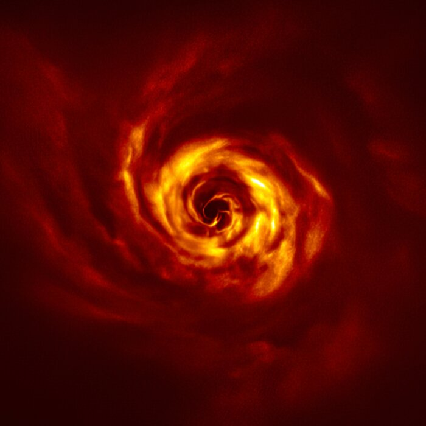
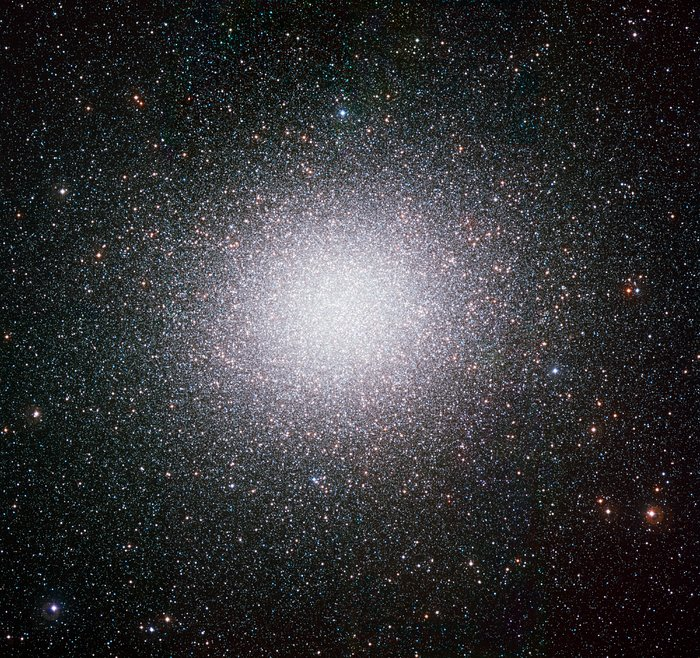
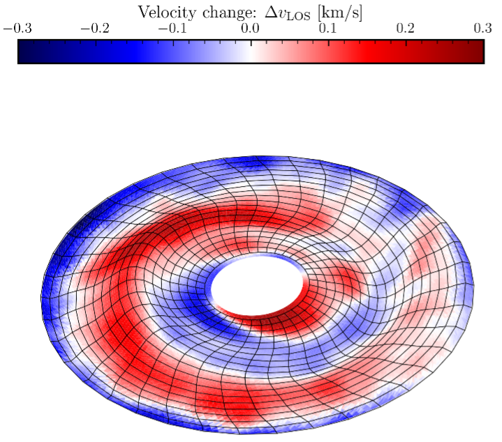

External Photoevaporation
Massive stars are common in star-forming regions. Their ultraviolet radiation heats and disperses the gas in the protoplanetary discs of neighbouring, lower-mass stars — a process called external photoevaporation. This dramatically reduces the time and material available for planet formation.
On the left is an optical wavelength VLT/MUSE image of a proplyd in the Orion Nebula, where the disc is being externally photoevaporated by the nearby O-type star θ¹ Orionis C. The bright cusp is the ionisation front, seen in emission lines of ionised oxygen and hydrogen.
My work has quantified how the incident UV field strength sets disc lifetimes and disc sizes, and demonstrated that many observed compact disc populations are consistent with being externally eroded. I am developing theoretical frameworks that connect radiation environment statistics to observable disc demographics in nearby clusters.
Star–Disc Encounters
When a passing star passes close to a young disc-bearing star, gravity can truncate the outer disc, excite eccentricities in forming planetesimals, and even unbind material entirely. These flybys are most frequent in the dense, early phase of star and planet formation, where stars are often found in multiple systems.
I have worked to quantify how encounters sculpt the disc and the encounter rates in star forming regions, as well as in later on in dense clusters. Encounters may explain the peculiar architectures of some observed planetary systems.

Late-Stage Infall
The classical picture of protoplanetary disc evolution treats the disc as an isolated, gradually depleting reservoir. But observations increasingly point to continued infall of material from larger-scale filaments and envelopes well into the disc-bearing phase.
On the right is an infrared scattered light image of the disc around AB Aurigae, which exhibits spiral arms and other features indicative of ongoing infall. My research investigates how this late-stage accretion can influence disc evolution and planet formation.
This late-stage accretion can revive dying discs, extend the window for planet formation, and introduce chemically diverse material. My work explores the conditions under which infall is dynamically significant and its imprint on disc mass distributions observed at different evolutionary stages.
Local Star-Forming Regions
The disc populations of nearby star-forming regions — Orion Nebula Cluster, Lupus, Taurus, Upper Sco — provide a statistical sample against which to test disc evolution models. These regions span a range of stellar densities and UV environments, making them a natural laboratory for environmental effects.
I combine theoretical predictions with multi-wavelength survey data (ALMA, Herschel, HST) to constrain photoevaporation rates and encounter histories, linking disc demographics to the specific environments in which they are embedded.

Dense Environments & Globular Clusters
Dense stellar environments — the cores of young clusters, the Galactic Centre — subject forming and formed planetary systems to extreme conditions: intense radiation, frequent encounters, and strong tidal forces. These environments may suppress planet formation altogether, or produce unusual planetary architectures.
I am interested in the survival of brown dwarf and planetary companions in these settings, and in what the presence or absence of planetary-mass objects in dense regions tells us about the environmental thresholds for planet formation.
Globular clusters are among the oldest stellar systems in the Galaxy, yet they harbour a puzzling phenomenon: multiple distinct stellar populations with different chemical abundances. Understanding their origin requires modelling early cluster formation and the subsequent gigayear dynamical evolution. My interest here bridges the short timescales of disc and planet formation with the long-term secular evolution of dense stellar systems, exploring how the conditions that produce multiple populations relate to the broader question of how environment shapes stellar and planetary outcomes.

Dynamics of Protoplanetary Discs
Protoplanetary discs are not the flat, featureless structures of the classical picture. Warps, spirals, and velocity substructures encoded in molecular-line emission carry imprints of embedded planets, misaligned companions, and large-scale disc physics.
I use kinematic modelling of ALMA observations to interpret large-scale velocity residuals as disc warps, disentangling them from planet-driven features. This work connects disc structure to the dynamical history of young stellar systems and to the conditions that shape planetary architectures.